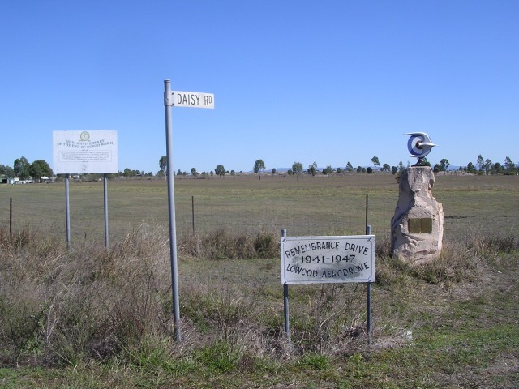
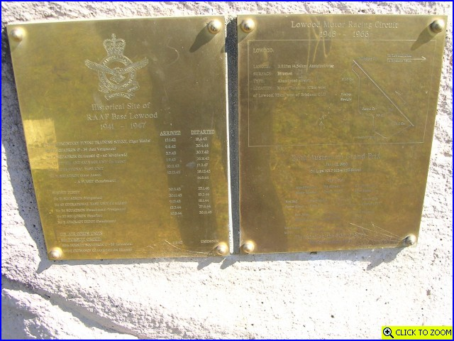

Lowood - Circuit & Airfield Heritage Marker
 Markers on Daisy Road at MG Corner.
 Close up of the brass plaque. [click here to zoom in]
Circuit photo tour >>
Photographs ©Neil Fackerell. Reproduced here with kind permission.